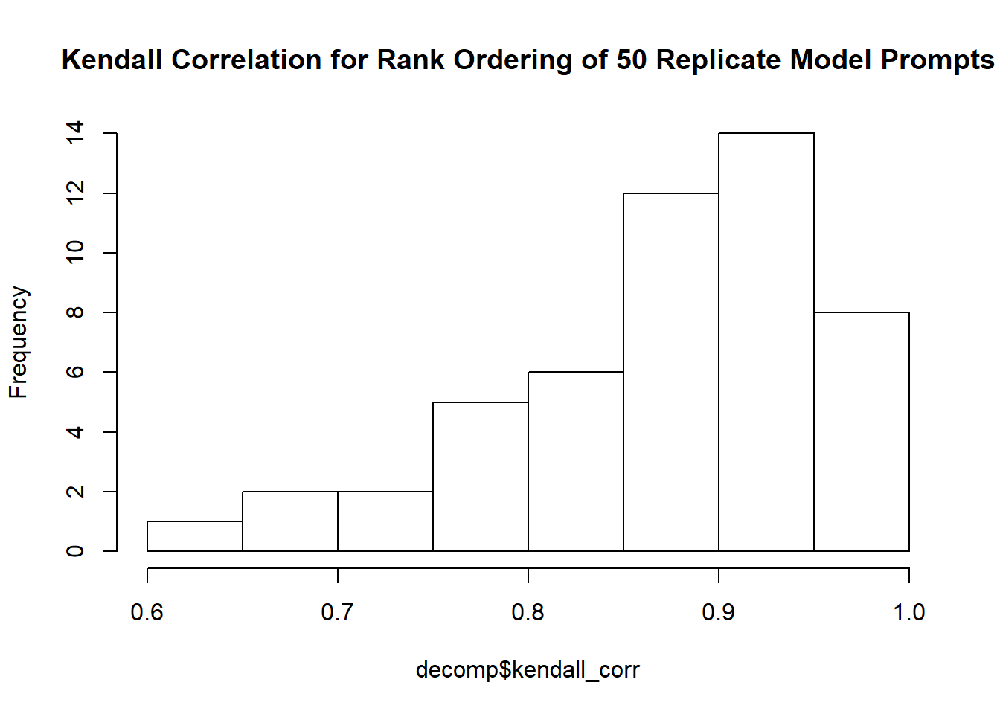

numbers = c(100, 10, 1, 1000)
words = xfun::numbers_to_words(numbers)
cat(numbers)
cat("\n")
cat(paste0(words, collapse=", "))100 10 1 1000
one hundred, ten, one, one thousandPeople seem to have this idea that large language models (LLM’s) can be relied upon to do complex things. People want to do things like “deep research”, pretending that an LLM can effectively perform the job of a research analyst. People make insulting statements like “GPT-4o…enables PhD-level reasoning”. People seem to be under the impression that LLM’s can be productive on their own 1 2 , that it’s a good idea to let agentic AI loose with access to the ability to submit proposed code to public open-source software, and disparage its maintainer when it is rejected (and I venture to say many are not discouraged by this result).
We’ve jumped straight to having AI attempt the most difficult tasks instead of building confidence in its abilities to do simple tasks and improving from there. What I haven’t seen much are evaluations of correctness of the things people are trusting AI to do. When an AI makes claims (about whatever topic) and compiles a list of references, do we even have the philosophical framework to determine whether the “deep research” was done with “maximal correctness”? How do we score the “research” an AI has done? At best we can be aware of the Gell-Mann amnesia effect, use our own expertise to judge AI outputs, and generalize from there.
But, the fact of the matter is that these complicated tasks are difficult to validate, and producing something that looks good does not mean it is good.
AI proponents claim that AI can do real math 1 2, although there are voiced doubts. People believe that AI can reason about complex problems. Some people really believe AI is going to fix our climate issues, lead us into space, and “discover all of physics”.
Jesus.
Guys. How about we start with something simple? I’d like an AI to sort a list of numbers. But to make it more interesting, the numbers are not presented as numeric values, they’re presented as their English-language representatives.
numbers = c(100, 10, 1, 1000)
words = xfun::numbers_to_words(numbers)
cat(numbers)
cat("\n")
cat(paste0(words, collapse=", "))100 10 1 1000
one hundred, ten, one, one thousandIf I asked you to tell me the increasing rank order of these numbers, you could probably get me a list of indexes: 3, 2, 1, 4. If this list is sorted to increase, you’ll find “one” first in this set of numbers. you’ll find “ten” second, “one hundred” third, and “one thousand” fourth.
If I gave you really random numbers like:
withr::with_seed(2, {
numbers = runif(4, 0, 1000) |> round(4)
words = xfun::numbers_to_words(numbers)
cat(numbers)
cat("\n")
cat(paste0(words, collapse="\n"))
cat("\n")
})184.8823 702.374 573.3263 168.0519
one hundred eighty-four point eight eight two three
seven hundred two point three seven four
five hundred seventy-three point three two six three
one hundred sixty-eight point zero five one nineIt might take you some time to parse the words that represent those numbers but the result would not be any different. You might have to translate the literal words to numbers to have an easier time but nevertheless I have faith in your ability to get the ordering right: 2, 4, 3, 1.
Did you have to do math to get this result? Did you do anything particularly complex? Not really. It’s almost instinctual at this point. Long ago (or maybe not long ago, I don’t know you) you were taught the rules of our numbering system, internalized them, and understand how map language to numbers in a way that you can apply those rules to the language. But if all you knew was English and you were never taught about numbers, if you weren’t taught these rules, there is no obvious way to order these words.
I think this is what trips people up about AI – marketing has done such a good job about painting a picture that AI is understanding things like a sentient intelligent being. I know people who thought GPT did math. But it’s not true.
To demonstrate this, I will take the above example and run it through GPT-5.2 (the newest model from OpenAI at the time of writing). Here is the prompt I will be giving the model:
input = make_rands(20)
make_prompt(n = input$n, words_joined = input$literals_joined)Provide an index for the following numbers indicating their rank position in a sorted list of the same numbers. For example, the index for ten, three, two is 3, 2, 1.
The list is 20 numbers long. Here is the list:
forty-nine thousand, twenty-five point seven four one eight nine four seven two nine four
seven thousand, eight hundred seven point eight four five zero four zero two two four four nine
fifty-eight thousand, four hundred fifty-eight point two eight nine zero eight four nine five six
twenty-seven thousand, six hundred sixty-four point six six four nine nine three zero six two six
seventy-nine thousand, eighteen point one seven six one six zero seven five two eight
fifty-six thousand, five hundred thirty-nine point six zero seven zero four eight zero three four seven
fifty thousand, two hundred sixty-eight point four zero six zero seven one seven zero zero two
thirteen thousand, one hundred eighty-five point six nine seven zero zero two three three six four
thirty-eight thousand, one hundred seventy-seven point two five six seven nine eight three seven one seven
fifty-three thousand, fourteen point eight nine three two seven one zero two nine
forty-two thousand, two hundred eight point three seven six seven one three zero nine seven one
forty-one thousand, seven hundred thirty-eight point two four three seven seven three five seven nine six
four thousand, seven hundred ninety-five point six zero seven nine four seven seven four four four three
fifty-two thousand, one hundred eighty-one point two seven six two three six six six zero eight
sixty-eight thousand, nine hundred eighty-seven point three four four four one four nine two seven one
ninety thousand, one hundred three point four two one four seven six six six nine six
three thousand, seven hundred forty point zero three zero five five zero three nine seven nine three
twelve thousand, four hundred thirty-four point six four nine seven zero zero two nine eight nine
seven thousand, eight hundred seventy-five point one one three seven zero one four four seven eight four
thirteen thousand, six hundred eighty-two point five three six one two eight nine zero eight fourThese are big long numbers when represented in English, to be sure, but if LLM’s are as good as they’re touted to be that won’t be an issue right? All these numbers are below 10,000 for goodness’ sake.
I’m going to set some things up – first the model that we’re using here and then the output format we’d like the model to return to us. I’m using the new R package {ellmer} to do this – so far so good.
# The system prompt defines vague behaviors for the AI model. It's not clear how
# much this affects the outputs and it is difficult to measure such a phenomenon
# given the space of possible prompts, but typically I've observed you want to
# "gas up" your AI model with statements like "you're really good at x,y,z" etc.
# I thought this prompt was appropriate for this task.
chat = chat_openai(
system_prompt = "You are an expert mathematician and logician. But, you can only speak using numbers and are exceedingly terse only replying with the solutions asked and no more. Provide no context for your answers, provide no support for your answers, provide only numbers.",
model = "gpt-5.2"
)
# Define the structure in which the output will be returned to us.
output_type = type_object(
ordering = type_array(type_integer())
)Here I’m going to make the random numbers, pass the prompt into the chat, get the outputs, and display them. I’ll go over what the outputs mean.
withr::with_seed(2026, {input = make_rands(20)})
single_response = function(prompt) {
chat$chat_structured(
prompt,
type = output_type
)
}
m_single_response = memoise::memoise(single_response, cache = cachem::cache_disk("cache"))
chat_output = m_single_response(input$prompt)
output_eval = chat_output_eval(input, chat_output)
output_eval$length_indices
[1] TRUE
$missing_indices
integer(0)
$fabricated_indices
integer(0)
$exceeded_max_index
[1] FALSE
$aligned_indices
[1] TRUE TRUE FALSE FALSE TRUE FALSE FALSE TRUE FALSE FALSE TRUE FALSE
[13] FALSE FALSE FALSE FALSE FALSE TRUE FALSE FALSE
$error_distance
[1] 0 0 -1 2 0 -1 1 0 1 1 0 2 1 -3 -1 1 -3 0 -3 3
$kendall_corr
[1] 0.8631579Here we have a bunch of fields:
length_indices: TRUE or FALSE – whether or not the length of indices returned by the model is the right length. For this example it should always be 20.
missing_indices: A vector of indices that it failed to produce.
integer(0) so it did not omit any rank ordering indices..fabricated_indices: A vector of indices that should not be in the set of 1:20.
integer(0) so it did not fabricate any numbers when generating the rank orderings.exceeded_max_index: TRUE or FALSE – whether it created an index greater than the max, 20.
aligned_indices: A vector of TRUE’s or FALSE’s that shows for which of the 20 random numbers it got the index correct.
error_distance: How far off was each rank index relative to where it should have been?
kendall_corr: Kendall correlation examines how aligned two sets of numbers are in their ordering. We aren’t just interested in how many numbers match positions, but we’re also interested in the relative increase or decrease of the sets together. -1 means the rank orders are effectively reversed, +1 means the rank orderings are identical, and a 0 means there is no correlation.
print(input$ordering) [1] 18 15 5 9 14 4 12 20 8 16 2 17 7 19 6 11 13 1 10 3print(chat_output$ordering) [1] 18 15 4 11 14 3 13 20 9 17 2 19 8 16 5 12 10 1 7 6So it got close. But the thing is I don’t expect it to get close, I expect it to be correct. This is about as trivial a problem I can come up with that touches on the ability (nay, strength) of an LLM (mapping language to abstract concepts) and a problem that requires understanding of something very fundamental to get correct. A problem that you or I – provided enough time – would not err.
One curiosity is that it used a 0 in the rank ordering. You might ask whether I told it to use 0-based or 1-based indexing; in the prompt I did, implicitly, in the example I gave it:
For example, the index for ten, three, two is 3, 2, 1.
Sorry, I’m not going to coddle the LLM, it should have enough context from the example.
But this was one example, maybe it was a fluke – we need to see this in action more times to assess the statistical properties of the correctness of the machine.
Now I’m going to create many such prompts and give them to the model, then we’ll pull out the results and analyze them.
# I'm going to run this query against GPT 50 times
reps = 50
withr::with_seed(123, {
many_inputs = lapply(1:reps, \(x) make_rands(20))
})
prompts = lapply(many_inputs, \(x) x$prompt)
many_chat_outputs = lapply(1:reps, \(i) m_single_response(prompts[[i]]))
output_evals = Map(f = chat_output_eval, make_rands_output = many_inputs, chat_output = many_chat_outputs)
decomp = decomp_output_evals(output_evals)
decomp$p_good_n
[1] 1
$p_any_missing_indices
[1] 0.4
$p_any_fabricated_indices
[1] 0.24
$p_exceeded_max_index
[1] 0
$p_aligned
[1] 0
$kendall_corr
[1] 0.6736842 0.9473684 0.8842105 0.8390531 0.9368421 0.9368421 0.7473684
[8] 0.9523943 0.9052632 0.7894737 0.8947368 0.8526316 0.8842105 0.9445943
[15] 0.9157895 0.8842105 0.9789474 0.8947368 0.8994835 0.9473684 0.7684211
[22] 0.9657026 0.9578947 0.8105263 0.9789474 0.9157895 0.8736842 0.9340402
[29] 0.7789474 0.8315789 0.9157895 0.8210526 0.8000000 0.9234861 0.8842105
[36] 0.8707154 0.8315789 0.6000000 0.8842105 0.9894737 0.9263158 0.8315789
[43] 0.9473684 0.9684211 0.7894737 0.9578947 0.9157895 0.8736842 0.7368421
[50] 0.6736842Here we have a different set of fields, aggregated from the individual output evaluations we saw above:
p_good_n: What proportion of the time did the model produce a rank order list of the proper length?
p_any_missing_indices: What proportion of the time did it just not include an index? (remember the rank order should always contain every number from 1 to 20)
p_any_fabricated_indices: Did it make any indices up that should not be in the set of {1, 20}?
p_exceeded_max_index: This is functionally similar to p_any_fabricated_indices, but limits our notice to the proportion of the replicates it gave a number greater than the maximum possible: 20.
p_aligned: The big kahuna, how many rank orderings were fully aligned.
kendall_corr: The Kendall correlation for each of the 50 replicates.
Below is the distribution of Kendall correlation for this sample.
hist(decomp$kendall_corr, breaks=10, col='white', main="Kendall Correlation for Rank Ordering of 50 Replicate Model Prompts")
print(summary(decomp$kendall_corr)) Min. 1st Qu. Median Mean 3rd Qu. Max.
0.6000 0.8316 0.8895 0.8733 0.9368 0.9895 They generally are pretty high (but never 1). So you can say that it is conceptualizing an ordering for the numbers but it is, to me, nothing more than general patterns it has picked up from training data (e.g. thousands are bigger than hundreds) and it is most certainly not parsing the words as numbers.
Again, the curiosity of the inclusion of 0 in the rank indexes is also notable. I suppose thinking back on it I never explicitly told it whether it should use a 0-based indexing scheme or a 1-based indexing scheme. But I did offer an example that suggests very strongly I wanted a 1-based indexing scheme. Regardless, it was not consistent and so it produced 0’s about half the time.
The model can mimic the appearance of a sorted list is but does not use any reasoning or logic or math to arrive at the answer. Because if it did it would get the right answer. More than 0% of the time! You could do better than this, and you’re made of meat. I’m actually kind of shocked the LLM could not sort these paltry lists of 20 numbers correctly even a single time. I was actually anticipating having to increase the list to lengths of hundreds or thousands of numbers before the AI failed to rank the lists correctly. I did not expect it would fail with 20.
I would expect it could get the answer right if you allowed it use of tools like python. It could write a script to convert the words to the numbers and then rank them. This might appear as if it is applying intelligence to the problem, but if it truly was there would be no need for python at all! Just do it in your mechanical head! Python serves as a generalized solution to this question expressed in a tangible and concise language. It can write the language of code but it is wholly unable to walk through the algorithm internally.
Here’s a video on this topic, exploring a real-life application of AI doing tasks and being evaluated on the same merits as remote workers.
They find that for jobs farmed out to remote contractors, if an AI produces work on the job it is satisfactory at best maybe 4% of the time when evaluated on the same merits as humans.
Now I’m not denying these things are getting better. I can see where this will consume jobs. Or at least convince the people in charge to let AI consume jobs. The societal ramifications of an AI good enough to do the same work as us is a topic for another post. But we weren’t about to crash the economy when we learned about vector embeddings. I view LLM’s as an extremely clever solution for Natural Language Processing and not much more. It does not formalize logic or implement rational thought. It does not do math.
For those who approach the use of AI as a general-purpose problem solver, ask yourself if the complexity of your problem is more or less than this one. Then ask yourself if you really think you can trust the outputs.
For those who say AI offers “PhD-level reasoning” ask yourself if there is a mathematics PhD out there who would be unable to sort 20 numbers. Ask yourself if you think PhD reasoning is easier or harder than sorting 20 numbers.
For those who think AI can write your code and do your work, ask yourself if that’s really true and what you’re losing by ceding work to these systems.
Some relevant quotes from the video:
My favorite example of this is one trains them on the whole internet so they get access to a lot of written rules of chess and lots of games of chess, and they still make illegal moves. They never really abstract the model of how chess works. That’s just so damning that you would not be able to learn chess after seeing a million games and reading the rules on wikipedia and chess.com
- Gary Marcus
We’re fooled into thinking that those machines are intelligent because they can manipulate language. And we’re used to the fact that people who can manipulate language very well are implicitly smart. But we’re being fooled. Now they’re useful, there’s no question. They’re great tools like computers have been for the last five decades. But let me make an interesting historical point, and this is maybe due to my age. There’s been generation after generation of AI scientists since the 1950’s claiming that the technique that they just discovered was going to be the ticket for human-level intelligence. You see declarations of Marvin Minsky, Newell and Simon, Frank Rosenblatt who invented the Perceptron the first learning machine in the 1950’s, sayhing that within 10 years we’ll have machines that are as smart as humans. They were all wrong. This generation with LLM is also wrong. I’ve seen three of those generations in my lifetime, so you know it’s just another example of being fooled.
- Yann LeCunn
Here’s the code I used: https://github.com/awong234/gpt-number-sorting
In case you’re curious, here’s the full list of 50 replicates, their true rank orderings, and their GPT rank ordering.
for (i in 1:length(many_chat_outputs)) {
true_ordering = many_inputs[[i]]$ordering
chat_ordering = many_chat_outputs[[i]]$ordering
message("Replicate: ", i, "\n")
cat("True order:\t\t", true_ordering, "\n")
cat("GPT order:\t\t", chat_ordering, "\n")
cat("Missing idx:\t", setdiff(1:20, chat_ordering), "\n")
cat("Fabricated idx:\t", setdiff(chat_ordering, 1:20), "\n")
cat("Duplicated idx:\t", chat_ordering[duplicated(chat_ordering)], "\n")
}Replicate: 1True order: 5 14 7 15 18 2 10 16 11 9 20 8 13 12 3 17 4 1 6 19
GPT order: 7 15 9 18 19 2 10 16 11 12 20 13 14 3 5 17 6 1 8 4
Missing idx:
Fabricated idx:
Duplicated idx: Replicate: 2True order: 17 13 10 20 11 14 8 9 5 2 19 18 12 16 1 7 15 3 6 4
GPT order: 18 13 11 20 12 14 8 9 4 3 19 17 10 16 1 7 15 2 6 5
Missing idx:
Fabricated idx:
Duplicated idx: Replicate: 3True order: 5 13 12 10 6 4 8 15 9 19 1 14 18 2 16 7 3 17 20 11
GPT order: 4 12 11 10 5 3 7 14 8 19 1 13 18 2 15 6 9 17 20 16
Missing idx:
Fabricated idx:
Duplicated idx: Replicate: 4True order: 14 2 8 5 20 10 18 19 17 9 16 13 15 1 11 4 7 12 6 3
GPT order: 16 3 8 6 19 11 17 18 15 10 14 13 12 1 9 2 7 5 4 4
Missing idx: 20
Fabricated idx:
Duplicated idx: 4 Replicate: 5True order: 6 15 9 17 2 10 20 19 18 4 3 13 8 14 7 5 16 1 11 12
GPT order: 5 14 9 17 2 10 20 19 18 4 3 12 7 13 6 8 16 1 11 15
Missing idx:
Fabricated idx:
Duplicated idx: Replicate: 6True order: 12 5 9 20 8 15 16 13 7 3 17 4 1 18 14 2 10 19 11 6
GPT order: 11 6 9 19 8 15 16 12 7 3 17 5 1 18 13 2 10 20 14 4
Missing idx:
Fabricated idx:
Duplicated idx: Replicate: 7True order: 11 6 5 4 7 20 3 1 2 14 10 18 13 15 9 12 17 16 19 8
GPT order: 13 8 7 5 9 20 4 1 3 15 12 17 14 16 10 11 18 19 6 2
Missing idx:
Fabricated idx:
Duplicated idx: Replicate: 8True order: 11 14 1 4 19 7 8 2 9 18 20 16 12 10 3 13 17 5 15 6
GPT order: 8 12 1 4 19 6 7 2 9 16 20 14 10 11 3 13 15 5 13 5
Missing idx: 17 18
Fabricated idx:
Duplicated idx: 13 5 Replicate: 9True order: 9 4 15 7 5 11 17 2 8 3 14 1 19 18 16 13 6 10 20 12
GPT order: 11 5 15 8 6 13 17 2 9 3 14 1 19 18 16 12 7 4 20 10
Missing idx:
Fabricated idx:
Duplicated idx: Replicate: 10True order: 16 5 15 2 12 9 3 10 18 17 4 6 20 13 19 8 7 14 1 11
GPT order: 18 6 14 4 10 8 5 9 19 17 7 3 20 12 16 2 1 13 0 11
Missing idx: 15
Fabricated idx: 0
Duplicated idx: Replicate: 11True order: 5 20 14 13 10 18 9 7 2 3 12 6 4 15 1 16 8 11 17 19
GPT order: 6 20 15 12 10 17 8 7 3 4 11 5 2 16 1 18 9 13 14 19
Missing idx:
Fabricated idx:
Duplicated idx: Replicate: 12True order: 6 20 16 14 1 7 10 12 15 19 13 9 11 2 5 8 4 18 3 17
GPT order: 5 20 15 13 1 7 9 11 14 19 12 8 10 2 4 6 3 18 16 17
Missing idx:
Fabricated idx:
Duplicated idx: Replicate: 13True order: 11 14 2 13 6 15 7 20 19 16 4 3 12 5 10 17 1 8 9 18
GPT order: 10 13 2 12 5 14 7 20 19 15 3 4 11 6 9 16 1 8 18 17
Missing idx:
Fabricated idx:
Duplicated idx: Replicate: 14True order: 18 17 13 19 10 11 6 7 2 9 16 1 3 5 15 14 20 8 4 12
GPT order: 18 16 13 19 10 11 5 6 1 9 15 2 3 4 14 12 20 8 7 12
Missing idx: 17
Fabricated idx:
Duplicated idx: 12 Replicate: 15True order: 16 8 13 9 2 12 3 10 1 14 11 6 4 19 15 18 20 7 5 17
GPT order: 16 5 12 8 2 11 3 9 1 13 10 6 4 18 15 17 20 7 0 19
Missing idx: 14
Fabricated idx: 0
Duplicated idx: Replicate: 16True order: 17 2 16 15 13 11 4 1 9 12 8 10 14 3 7 18 19 5 6 20
GPT order: 18 2 17 16 14 11 5 1 9 12 8 10 15 4 6 19 20 7 3 13
Missing idx:
Fabricated idx:
Duplicated idx: Replicate: 17True order: 17 6 4 14 3 1 20 2 8 18 10 5 15 16 7 9 13 11 12 19
GPT order: 18 6 4 14 3 1 20 2 8 17 11 5 15 16 7 9 13 10 12 19
Missing idx:
Fabricated idx:
Duplicated idx: Replicate: 18True order: 9 1 13 4 11 7 19 8 5 15 2 18 12 3 14 20 16 10 6 17
GPT order: 10 1 14 4 11 7 19 8 5 15 2 18 13 3 16 20 17 12 6 9
Missing idx:
Fabricated idx:
Duplicated idx: Replicate: 19True order: 2 3 18 6 9 16 4 1 10 13 11 8 17 12 14 19 15 5 7 20
GPT order: 2 5 18 7 8 15 6 1 11 13 12 9 17 14 16 19 14 10 6 20
Missing idx: 3 4
Fabricated idx:
Duplicated idx: 14 6 Replicate: 20True order: 13 15 11 16 12 18 5 9 1 6 19 10 14 17 3 7 8 2 4 20
GPT order: 14 15 10 16 13 18 6 9 1 5 19 11 12 17 3 8 7 2 4 20
Missing idx:
Fabricated idx:
Duplicated idx: Replicate: 21True order: 20 3 18 14 10 11 16 2 9 15 7 17 5 13 6 4 19 8 12 1
GPT order: 20 5 18 14 9 10 16 2 7 15 6 17 4 12 8 3 19 1 11 13
Missing idx:
Fabricated idx:
Duplicated idx: Replicate: 22True order: 11 16 13 7 18 15 6 9 3 17 19 12 8 20 5 14 2 10 1 4
GPT order: 12 16 14 8 18 15 7 9 3 17 19 13 9 20 5 11 2 10 1 4
Missing idx: 6
Fabricated idx:
Duplicated idx: 9 Replicate: 23True order: 8 12 15 5 19 14 17 3 10 13 11 9 7 1 6 20 18 16 4 2
GPT order: 7 12 16 4 19 14 17 3 9 13 11 10 6 1 5 20 18 15 2 0
Missing idx: 8
Fabricated idx: 0
Duplicated idx: Replicate: 24True order: 20 9 11 3 12 6 5 15 7 18 2 19 8 17 14 10 13 1 4 16
GPT order: 20 11 13 4 14 7 6 17 8 18 2 19 10 16 15 12 3 1 5 9
Missing idx:
Fabricated idx:
Duplicated idx: Replicate: 25True order: 6 16 8 13 18 4 5 11 9 17 19 2 10 14 3 20 7 1 12 15
GPT order: 5 16 7 11 18 3 4 10 8 17 19 2 9 13 1 20 6 0 12 15
Missing idx: 14
Fabricated idx: 0
Duplicated idx: Replicate: 26True order: 8 10 6 2 9 5 15 14 20 7 13 3 19 11 16 4 12 17 1 18
GPT order: 7 9 5 2 8 4 12 11 20 6 13 3 17 10 15 1 14 16 0 18
Missing idx: 19
Fabricated idx: 0
Duplicated idx: Replicate: 27True order: 5 9 7 2 11 13 18 1 20 6 19 14 10 16 3 15 8 17 12 4
GPT order: 4 7 6 2 11 15 18 1 20 5 19 16 10 17 3 14 8 13 12 9
Missing idx:
Fabricated idx:
Duplicated idx: Replicate: 28True order: 15 3 17 5 14 20 2 18 16 7 6 4 11 19 9 12 13 10 8 1
GPT order: 14 3 16 6 13 20 2 17 15 8 7 5 11 18 9 12 10 9 4 1
Missing idx: 19
Fabricated idx:
Duplicated idx: 9 Replicate: 29True order: 2 19 15 3 12 13 4 16 8 17 9 18 11 6 20 14 5 1 10 7
GPT order: 2 19 16 4 12 13 6 17 8 18 10 15 14 7 20 3 9 1 11 5
Missing idx:
Fabricated idx:
Duplicated idx: Replicate: 30True order: 16 13 14 8 15 5 6 12 20 11 10 2 19 4 3 17 9 7 18 1
GPT order: 18 15 16 7 17 4 6 13 20 12 11 2 19 3 5 14 10 8 9 1
Missing idx:
Fabricated idx:
Duplicated idx: Replicate: 31True order: 7 13 6 8 5 16 4 17 9 10 12 3 1 20 11 15 18 14 19 2
GPT order: 6 13 5 7 4 16 3 17 8 9 12 2 1 20 11 15 18 14 19 10
Missing idx:
Fabricated idx:
Duplicated idx: Replicate: 32True order: 19 18 14 8 1 7 4 17 6 5 13 16 10 11 2 3 20 12 15 9
GPT order: 18 16 14 8 1 6 4 15 5 7 13 12 10 11 2 3 19 9 17 0
Missing idx: 20
Fabricated idx: 0
Duplicated idx: Replicate: 33True order: 10 16 18 6 3 12 14 2 4 11 15 20 7 9 13 17 19 1 8 5
GPT order: 12 16 18 7 2 13 15 1 4 14 17 20 9 11 8 19 10 0 6 5
Missing idx: 3
Fabricated idx: 0
Duplicated idx: Replicate: 34True order: 19 17 4 16 8 2 20 5 15 6 1 13 3 9 10 14 18 7 12 11
GPT order: 18 16 3 14 6 2 20 4 13 5 1 11 2 7 8 15 17 9 10 12
Missing idx: 19
Fabricated idx:
Duplicated idx: 2 Replicate: 35True order: 17 16 18 19 20 13 11 5 10 6 1 15 12 3 7 14 4 2 9 8
GPT order: 17 16 18 19 20 12 10 4 8 6 1 14 11 2 7 13 3 5 9 15
Missing idx:
Fabricated idx:
Duplicated idx: Replicate: 36True order: 18 6 3 19 7 15 13 8 5 10 14 12 16 17 11 9 2 1 20 4
GPT order: 18 5 3 19 9 12 11 10 4 14 13 8 15 16 7 6 2 1 20 4
Missing idx: 17
Fabricated idx:
Duplicated idx: 4 Replicate: 37True order: 7 11 12 17 8 13 16 9 14 2 6 18 10 19 3 4 15 20 5 1
GPT order: 8 13 14 17 10 15 16 11 12 2 7 18 9 19 4 5 6 20 3 1
Missing idx:
Fabricated idx:
Duplicated idx: Replicate: 38True order: 20 5 2 15 10 13 17 3 16 19 9 8 6 4 14 11 12 18 1 7
GPT order: 20 5 2 14 10 12 17 3 15 16 18 8 6 4 13 11 19 1 7 9
Missing idx:
Fabricated idx:
Duplicated idx: Replicate: 39True order: 10 4 12 9 11 2 3 8 16 14 20 19 15 17 1 5 6 7 13 18
GPT order: 10 4 13 9 12 2 3 7 16 15 20 18 17 19 1 5 8 6 14 11
Missing idx:
Fabricated idx:
Duplicated idx: Replicate: 40True order: 6 18 1 15 17 12 4 2 9 19 20 14 5 13 16 11 3 8 10 7
GPT order: 7 18 1 15 17 12 4 2 9 19 20 14 5 13 16 11 3 8 10 6
Missing idx:
Fabricated idx:
Duplicated idx: Replicate: 41True order: 10 9 3 1 6 20 12 11 17 15 2 16 8 19 18 5 7 4 14 13
GPT order: 10 8 3 1 5 20 11 12 16 14 2 15 7 19 17 4 6 0 13 9
Missing idx: 18
Fabricated idx: 0
Duplicated idx: Replicate: 42True order: 14 6 11 20 18 3 8 2 7 17 1 19 9 16 13 10 15 12 5 4
GPT order: 16 6 13 20 18 3 9 2 7 17 1 19 10 15 14 12 11 0 5 4
Missing idx: 8
Fabricated idx: 0
Duplicated idx: Replicate: 43True order: 19 15 12 3 11 7 17 1 6 5 8 14 20 13 10 9 18 4 2 16
GPT order: 19 15 12 4 10 7 17 1 6 2 8 14 20 13 9 11 18 5 3 16
Missing idx:
Fabricated idx:
Duplicated idx: Replicate: 44True order: 8 2 15 9 13 7 5 3 10 12 4 6 18 11 19 16 1 17 20 14
GPT order: 7 2 14 8 12 5 4 3 9 11 1 6 17 10 18 15 0 16 19 13
Missing idx: 20
Fabricated idx: 0
Duplicated idx: Replicate: 45True order: 3 19 13 4 14 20 9 7 6 5 11 15 12 10 18 16 1 8 2 17
GPT order: 3 18 12 5 13 19 9 8 7 6 11 14 10 0 15 17 1 2 4 16
Missing idx: 20
Fabricated idx: 0
Duplicated idx: Replicate: 46True order: 19 9 16 11 13 7 14 18 15 3 1 2 17 10 4 20 12 8 6 5
GPT order: 19 9 16 12 14 8 13 18 15 3 1 2 17 11 4 20 10 7 6 5
Missing idx:
Fabricated idx:
Duplicated idx: Replicate: 47True order: 15 2 7 16 12 11 6 9 3 14 19 5 13 10 20 4 8 18 17 1
GPT order: 16 2 6 17 13 12 5 9 3 14 18 4 11 10 20 7 8 19 15 1
Missing idx:
Fabricated idx:
Duplicated idx: Replicate: 48True order: 20 15 9 13 3 5 10 7 12 6 16 4 18 1 8 19 17 2 11 14
GPT order: 20 11 8 12 3 5 9 7 13 6 14 4 19 1 10 18 17 2 15 16
Missing idx:
Fabricated idx:
Duplicated idx: Replicate: 49True order: 11 9 14 4 19 13 12 3 16 10 17 2 18 5 6 15 20 1 7 8
GPT order: 10 8 13 4 18 12 11 3 14 9 15 2 16 6 7 0 19 1 5 17
Missing idx: 20
Fabricated idx: 0
Duplicated idx: Replicate: 50True order: 10 16 20 13 19 17 3 4 5 9 1 6 12 8 11 18 14 7 15 2
GPT order: 10 15 20 13 19 16 4 5 6 9 2 7 12 8 11 18 14 1 3 17
Missing idx:
Fabricated idx:
Duplicated idx: